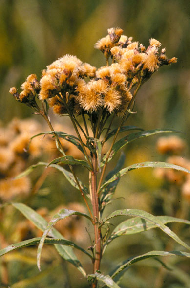

Vernonia Fasciculata
Family: Asteraceae
Common Ironweed
Swink/Wilhelm # 5
Click to view larger photo
FLOWERING: Mid-July through September
SEED TIMING: Mid-October
HABITAT: Wet prairies
DIAGNOSTIC FEATURES: 2 - 6 feet. Smooth, erect, red or purple stem with lance-shaped leaves. Flat-topped clusters of intense purple, tufted flower heads. Eye stopper.
TO PICK: Seed develops with cinnamon brown pappus just as striking as the flowers. Take entire head. Leaves are still robust even though the seed is ready.